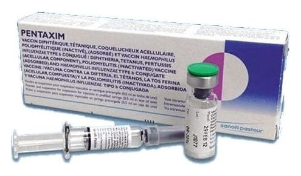

Pentaxim 0,5 ml IM Enjeksiyonluk Süspansiyon İçin Toz İçeren Flakon Ve Süspansiyon İçeren Kullanıma Hazır Enjektör, 1 Adet

Ne için kullanılır
KT · Bölüm 1PENTAXIM bir aşıdır. Aşılar, bulaşıcı hastalıklara karşı koruma sağlamak için kullanılırlar.
PENTAXIM enjekte edildiğinde, vücudun doğal savunması bu hastalıklara karşı koruma geliştirir.
PENTAXIM, kutuda, tek dozluk flakonda toz ve çözücü olarak kullanıma hazır iğnesiz enjektör (iki adet iğne ilavesiyle) içinde enjeksiyonluk süspansiyon veya iğneli kullanıma hazır enjektör içinde enjeksiyonluk süspansiyon halinde iki formda sunulmaktadır.
PENTAXIM, 2 aylıktan itibaren çocuklarda difteri, tetanoz, boğmaca, çocuk felci ve Haemophilus influenzae tip b bakterisinin sebep olduğu yayılan (invaziv) enfeksiyonlara (menenjit, kan enfeksiyonu, vs.) karşı çocuğunuzu korumaya yardım etmek için etkilidir. Diğer Haemophilus influenzae tipleri nedeniyle oluşan enfeksiyonlara veya diğer mikroorganizmaların sebep olduğu menenjite karşı korumaz.